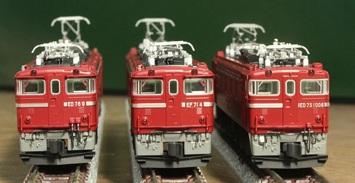
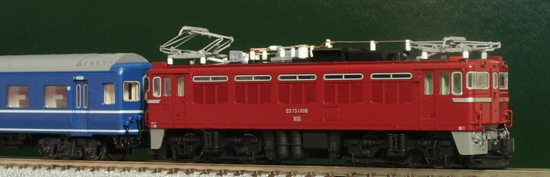
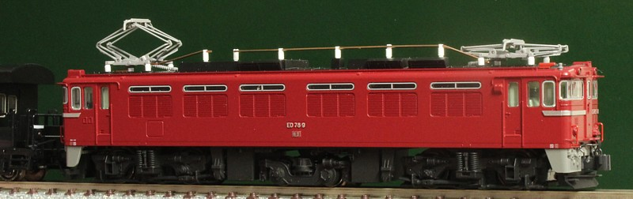
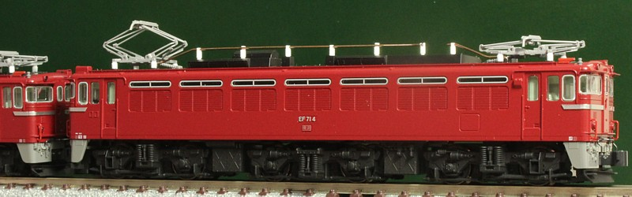
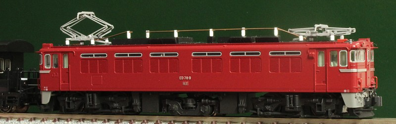
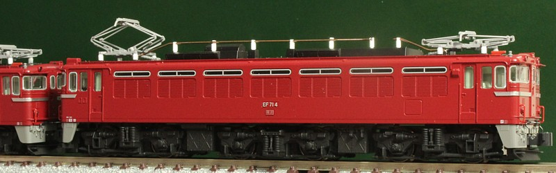
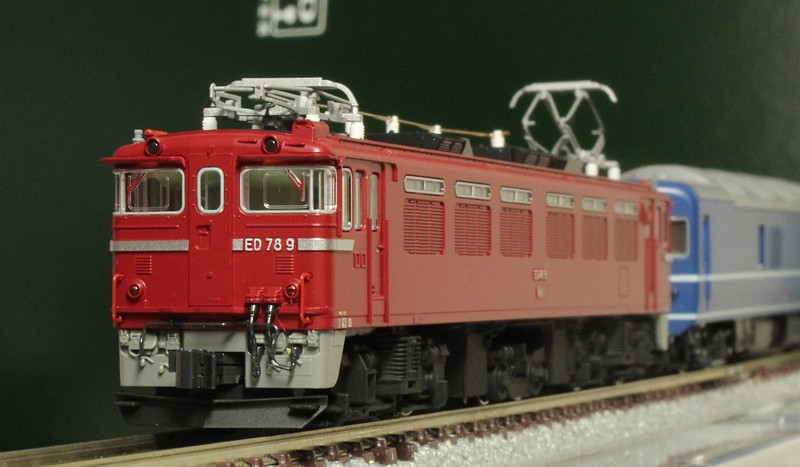

東北の交流機たち(ED75他)
東北の交流機たちです。
黒磯を越えると一気に色が変わる東北、旧客の時代に行きたかったです。
若いころは夜行での通過、最近は新幹線なので黒磯も遠くなってしまいました。
最近急速にラインアップを広げるKATOのリニューアル交流機です。
エアホース取り付けをしようかと思いつつ、本数が多くて面倒になり保留中。
足回りの黒塗装と、パンタグラフの塗装だけをやってます。
ED75-1000,ED78,EF71です。福島駅な並び。

各形式。パンタグラフ、直流機はねずみ色1号で塗ったのですが交流機は銀にしてみました。
あまりにギラギラしているのもちょっと、なので、ねずみ色1号と混ぜてくすませてます。





ED78あたりが旧客、50系と組み合わせてよく登場してます。
ED75は、0番台が欲しいです。
700番台が先に来ますね。


ED75は白成形されてしまっている交流機器を追加で塗り分けました。
空気碍管も白で塗ってみたのですが…いまいちよくわからず。